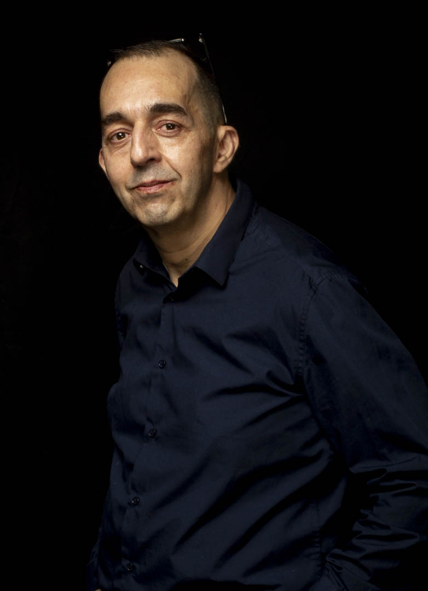

Photo de studio & strobisme
SAYSKO PHOTOGRAPHIE
La lumière sculptée · Vos émotions, au cœur de chaque image.
Des portraits travaillés au flash, une lumière maîtrisée et des images qui racontent une histoire. Bienvenue dans mon studio.
Voir le portfolioDéfiler
Mon Portfolio
À propos

Le photographe
Derrière l'objectif
Spécialisé en photo de studio et en strobisme, je construis chaque image avec une lumière maîtrisée : flash, réflecteurs, ombres portées et contrastes travaillés pour donner du relief et du caractère au sujet.
Du réglage de l'éclairage à la retouche finale, chaque étape vise une seule chose : transformer une prise de vue en une image qui raconte une histoire.
Saysko
Photographie · Studio
Me contacter
Une collaboration, une commande ou simplement un bonjour ?
sayskothemix+contact@gmail.com